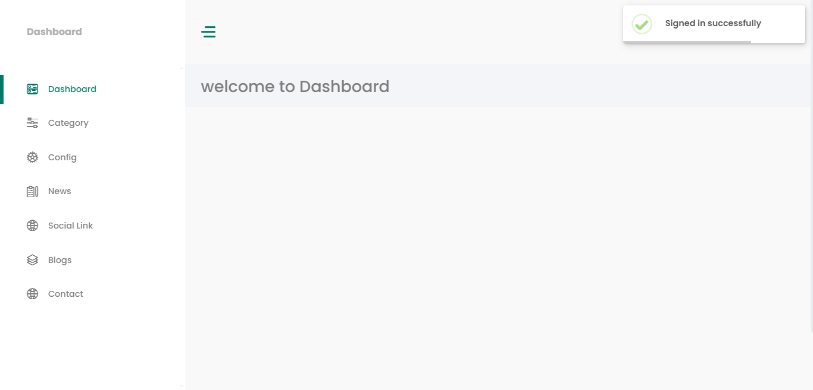

Blog Website
Client
Synex Digital
Team
Solo
Services
Web Development
Date
February 18th, 2024

Brief Description: Developed a dynamic and interactive blog website leveraging Laravel, Livewire, AJAX, MySQL, and Bootstrap. This project features a user-friendly interface and real-time interactions, including seamless content updates and efficient data handling. The use of Laravel and Livewire ensures a robust backend and smooth, responsive user experience, while Bootstrap provides a modern, clean design. AJAX enhances user interactions by enabling asynchronous content loading without page refreshes.
Dasboard Features
Admin login and registration
Category
Edit allows users to modify existing blog categories. Clicking this button opens a modal form pre-filled with the current category details, enabling users to make and save changes seamlessly.
Delete provides an option to remove a category from the list. Upon clicking, a confirmation prompt ensures intentional deletion, followed by an immediate update of the category list without page refreshes.
Status Toggle (On/Off) enables users to activate or deactivate categories. A switch or toggle button dynamically updates the category’s status, visually indicating whether it is currently active or inactive, and instantly reflects this change in the system.
Designed a streamlined interface for creating blog categories, featuring intuitive form validation and dynamic category management. Users can easily add and organize categories with real-time feedbacks The SEO fileds are also implemented to set SEO keywords, description, and page dynamically.
Blog
Edit allows users to modify existing blog. Clicking this button opens a modal form pre-filled with the current category details, enabling users to make and save changes seamlessly.
Delete provides an option to remove a blog and its content inside from the list. Upon clicking, a confirmation prompt ensures intentional deletion, followed by an immediate update of the blog list without page refreshes.
Status Toggle (On/Off) enables users to activate or deactivate blog and its contents. A switch or toggle button dynamically updates the blogs status, visually indicating whether it is currently active or inactive, and instantly reflects this change in the system.
Designed a streamlined interface for creating blog and its contents. Users can easily add and organize blogs and its contents with real-time feedbacks.
Blog Contents
Designed a streamlined interface for creating blog contents. Users can easily create and organize contents with real-time feedbacks. Integrated Summernote, a versatile WYSIWYG editor, for crafting and editing blog content. This feature-rich editor offers a user-friendly interface with formatting tools, image embedding, and media management, enabling authors to create visually engaging and polished posts with ease.
News
Edit allows users to modify existing news content. Clicking this button opens a modal form pre-filled with the news current details, enabling users to make and save changes seamlessly.
Delete provides an option to remove a newscontent from the list. Upon clicking, a confirmation prompt ensures intentional deletion, followed by an immediate update of the news list without page refreshes.
Status Toggle (On/Off) enables users to activate or deactivate news and its contents. A switch or toggle button dynamically updates the news status, visually indicating whether it is currently active or inactive, and instantly reflects this change in the system.
Designed a streamlined interface for creating news. Users can easily create and organize news with real-time feedbacks. Integrated Summernote, a versatile WYSIWYG editor, for crafting and editing news content. This feature-rich editor offers a user-friendly interface with formatting tools, image embedding, and media management, enabling authors to create visually engaging and polished posts with ease.
Config
This creates customizable SEO fields to set SEO keywords, description, in static pages like home, about, contact, etc.
Contact
Implemented a contact message inbox where readers can submit inquiries through a contact form in front-end. Submitted messages are securely stored and displayed in the backend interface, allowing administrators to review and respond to inquiries efficiently. The system ensures seamless data capture and management, providing a clear and organized view of all incoming messages.
Feel free to contact me if you have any questions or suggestions.